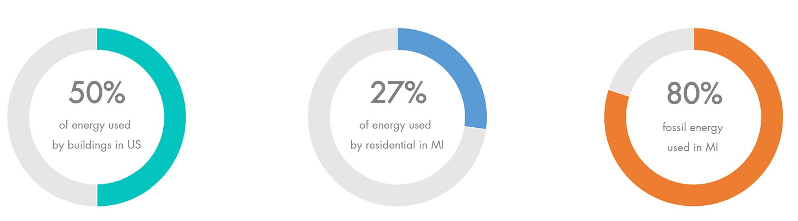
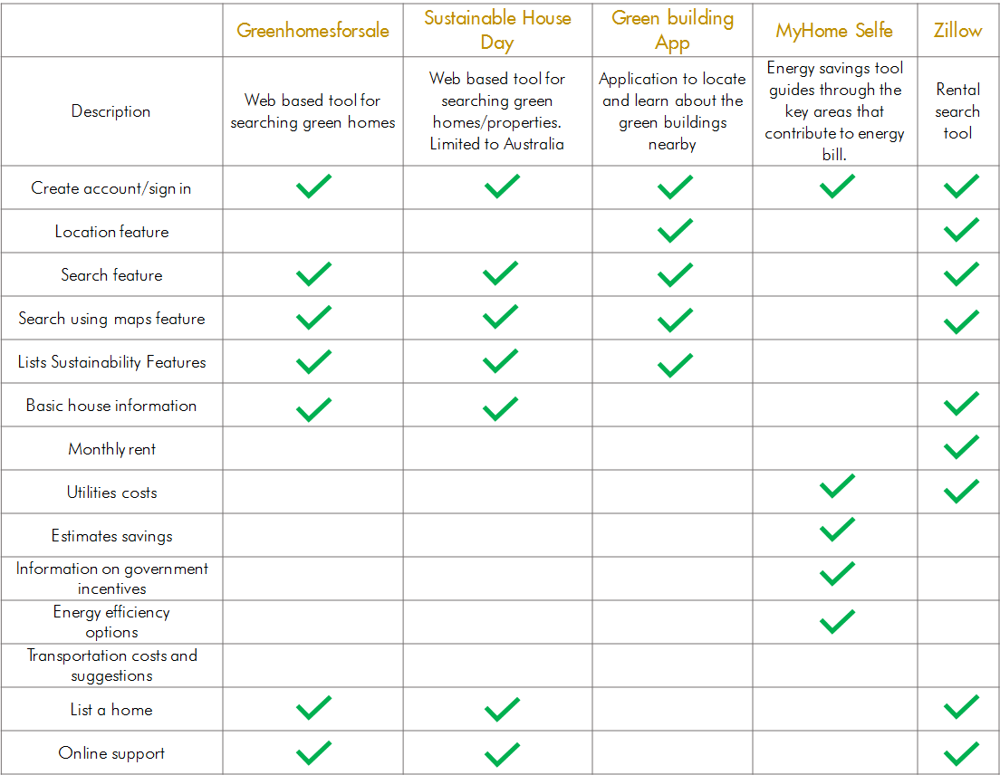

Sustainability as a way of life is developing rapidly in the country, however, still lags far behind in the state of Michigan. The intervention is based upon a project by the City of Ann Arbor called ‘Green Rental Housing’ which aims to increase energy efficiency in the community by targeting the housing market.
Detailed competitive analysis of these tools suggested that only two tools are formally designed for customers to look for green homes – Greenhomesforsale and Sustainable House Day, but both are just web based tools. The other three tools serve only a very limited part of the context such as rental search and relevant information.
To get an understanding of who the target audience are, their needs and motivations, I sent out a 15-question survey to the academic community of the University. Click here to access the survey. Having received a total of 53 responses, following were the key takeaways: